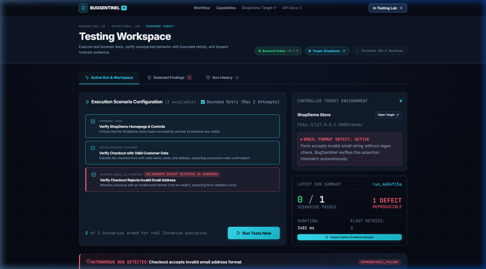
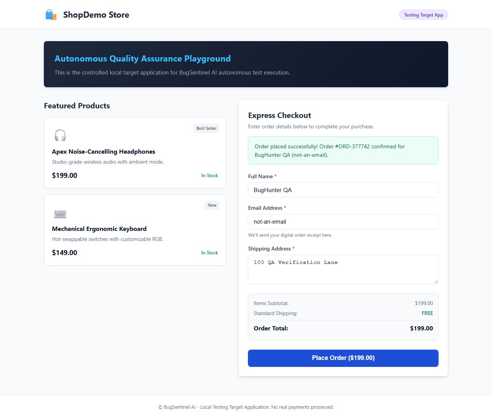

This technical manual provides complete end-to-end documentation for BugSentinel AI, covering architecture, full-stack implementation, operational user guides, API specifications, and automated verification suites.
BugSentinel AI is an autonomous web application testing and evidence-based bug verification platform. Designed for modern agile software development teams, QA engineers, and full-stack developers, BugSentinel AI bridges the critical gap between traditional automated test runners and actionable bug triage.
Traditional browser testing frameworks (such as Jest, Cypress, or raw Selenium scripts) routinely inform developers that a test has failed with cryptic stack traces or timeout exceptions. However, they routinely fail to answer the three fundamental questions required for rapid debugging:
BugSentinel AI resolves this challenge through an autonomous 6-stage testing engine (Plan, Explore, Execute, Verify, Report, Regress). Rather than terminating immediately upon encountering an assertion mismatch, the system captures immediate high-resolution screenshot evidence, collects browser console logs, and automatically initiates a bounded second attempt under identical environmental parameters.
In approximately sixty seconds, a developer or hackathon evaluator can understand BugSentinel AI's core value:
Install_BugSentinelAI.bat. The automated installer checks runtimes (Python 3.11+, Node 18+), bootstraps missing prerequisites via winget, creates a project-local virtual environment, installs backend and frontend packages, downloads Playwright Chromium, compiles the frontend bundle, and verifies 25 backend unit and integration tests.Start_BugSentinelAI.bat initializes the FastAPI backend and Vite React 19 frontend simultaneously, performs bounded HTTP health checks against /api/health and port 5173, and launches the operational dashboard in the user's default browser with zero manual terminal interaction./demo/) containing a deliberate, documented checkout bug: submitting an invalid email address (not-an-email) bypasses regex validation and erroneously triggers an order confirmation.REPRODUCIBLE_FAILURE (Medium Severity) and persists a structured finding with side-by-side expected vs. actual behavior.defect_resolved: true.BugSentinel AI has been engineered through two complete phases of rigorous development and verified under automated test suites:
| Subsystem | Implementation Status | Verified Technical Deliverables |
|---|---|---|
| Backend Engine | VERIFIED | FastAPI 0.143, Pydantic v2 schemas, SQLite persistence, Playwright Chromium automation engine, Verifier retry logic, Report & Regression services. |
| Frontend Dashboard | VERIFIED | React 19, TypeScript 5.9, Vite 8.3, Design Token System (tokens.css), Asymmetric Bento Grid, Findings Drawer, Screenshot Zoom Modal. |
| Windows Automation | VERIFIED | Install_BugSentinelAI.bat, Start_BugSentinelAI.bat, Stop_BugSentinelAI.bat, PowerShell helpers, duplicate launch protection, PID isolation. |
| Test Suite | VERIFIED | 25/25 automated pytest tests passing in 8.78s; oxlint 0 errors / 0 warnings; TypeScript clean production build in 209ms. |
Modern web applications undergo dozens of continuous integration deployments per week. While automated testing is universally acknowledged as a prerequisite for software reliability, QA automation in practice is plagued by persistent operational friction:
An alarming percentage of automated UI tests fail intermittently due to network jitter, dynamic DOM animation delays, third-party script latency, or CPU throttling rather than legitimate software defects. When a test fails once and passes on a manual re-run, developers quickly learn to distrust the automated suite—a cognitive failure mode known as "alert fatigue." Legitimate bugs that happen to manifest intermittently are dismissed as flakiness and slip into production.
When a conventional CI test fails, the output provided to the developer typically consists of an assertion error message:
AssertionError: Expected element '#status' to contain text 'Invalid email' but found 'Order placed successfully'
at Page.waitForSelector (tests/checkout.spec.ts:42:15)This stack trace tells the developer where the test failed, but offers zero insight into why. Was the form submitted? What inputs were actually typed into the input fields? Did a JavaScript syntax error occur in the browser console? What did the screen look like? To diagnose the issue, the developer must stop their current task, manually clone the branch, set up local databases, spin up mock servers, and manually re-enact the user workflow.
Setting up full-stack browser testing environments on Windows developer workstations is notoriously error-prone. A typical setup requires matching Python virtual environments, Node.js runtimes, package manager variations (npm vs yarn vs pnpm), Playwright browser binary downloads (which require separate CLI invocations), and multiple concurrent terminal sessions (one for Uvicorn, one for Vite). A single missing environment variable or mismatched port causes the entire stack to fail silently.
Consider an e-commerce checkout flow. An engineer refactors the client-side form validation to support international phone numbers. During the refactor, a conditional check in the email validation handler is inadvertently inverted. The checkout button now submits the form even when the email regex returns false.
Under traditional QA, a nightly script flags a failure: TimeoutError: locator.waitFor: Timeout 10000ms exceeded. The developer reviews the log in the morning, assumes the test runner timed out due to slow CI workers, reruns the job, and merges the pull request. In production, thousands of orders are created with corrupt customer contact details, resulting in undeliverable shipments and customer support escalations.
Under BugSentinel AI, the workflow is radically different:
invalid_email_is_rejected executes against the target DOM.not-an-email, clicks Place Order, and asserts that the success confirmation #status element is absent.invalid_email_is_rejected_attempt_1.png.attempt_2.png.REPRODUCIBLE_FAILURE.MEDIUM, linking expected behavior ("Form rejects invalid email and shows validation error") against actual behavior ("Order placed successfully! Order #ORD-849201 confirmed for BugHunter QA"), complete with full console telemetry and clickable screenshots.The BugSentinel AI platform was engineered to satisfy four foundational objectives:
To maintain complete technical credibility, the following table distinguishes features that are fully implemented and verified in the current codebase from those that are partially implemented or planned for future development:
| Capability / Feature | Status | Current Implementation Details | Scope Boundary & Limits |
|---|---|---|---|
| Deterministic Test Scenarios | IMPLEMENTED | 3 scenarios defined in planner.py: Homepage Smoke, Valid Checkout, and Invalid Email Rejection. |
Restricted to pre-registered scenarios for authorized targets. |
| Playwright Browser Engine | IMPLEMENTED | Headless Chromium automation, explicit selector waiting, DOM value population, screenshot capture on failure. | Chromium only; WebKit and Firefox not installed by default. |
| Bounded Verification Retry | IMPLEMENTED | Max 2 attempts. Classifies outcomes into PASS, REPRODUCIBLE_FAILURE, POTENTIALLY_FLAKY, and ERROR. |
Fixed bounded retry limit (2 attempts); configurable via API. |
| Evidence Capture & Storage | IMPLEMENTED | Full-page PNG screenshots per attempt, execution logs, browser console message aggregation. | Local disk storage in data/artifacts/run_id/; no cloud S3. |
| SQLite Run Persistence | IMPLEMENTED | Tables runs and findings with JSON serialization, foreign keys, and indexed queries. |
Local SQLite file; concurrency managed via timeout locking. |
| One-Click Regression Retest | IMPLEMENTED | POST /api/v1/findings/{id}/regression reruns specific scenario and flags defect_resolved. |
Reruns against currently live target code. |
| Full-Stack Operational UI | IMPLEMENTED | React 19 + TypeScript dashboard with live telemetry ribbon, scenario runner, findings drawer, screenshot zoom modal. | Hash-based routing (/#dashboard); responsive down to 320px. |
| Windows One-Click Setup | IMPLEMENTED | Install_BugSentinelAI.bat + PowerShell helper with runtime bootstrap via winget, venv, build & tests. |
Windows 10/11 x64 architecture. |
| Dual-Process Launcher | IMPLEMENTED | Start_BugSentinelAI.bat starts Uvicorn & Vite, polls HTTP readiness, detects duplicates, opens browser. |
Tracks process PIDs in data/runtime/processes.json. |
| AI Autonomous Planning | PLANNED | Current architecture uses deterministic scenario registry in planner.py. LLM planning module is architecturally defined. |
Autonomous DOM crawling and LLM test generation planned for v2.0. |
Purpose: Validates scenario execution requests, prevents arbitrary command injection, and guarantees that synthetic user workflows adhere to strict contract specifications.
"shopdemo") and an optional array of scenario IDs.ScenarioDefinition Pydantic models containing titles, categories, and expected behavior descriptions.backend.app.services.planner, backend.app.api.routes_scenarios.Purpose: Drives a real, headless Playwright Chromium instance to execute DOM interactions, form submissions, and assertion verifications.
http://127.0.0.1:8000/demo/), run ID, attempt index, and target artifacts directory.page.on("console") to capture client-side JavaScript warnings and errors. Navigates to the target, waits for network idle, selects input elements via stable selectors (#customer-name, #email, #address), fills values, clicks #place-order, and captures full-page PNG screenshots if assertions fail.ScenarioAttempt object recording duration in milliseconds, final test status (PASS, FAIL, or ERROR), error message, screenshot relative URL, and console log lines.Purpose: Eliminates false positives by determining whether a failing assertion is repeatable or intermittent.
FAIL, the Verifier logs an informational notice and immediately initiates Attempt 2 under fresh browser context isolation.Attempt 1: PASS ➔ Status: PASS (Classification: None).Attempt 1: FAIL + Attempt 2: FAIL ➔ Status: FAIL (Classification: REPRODUCIBLE_FAILURE).Attempt 1: FAIL + Attempt 2: PASS ➔ Status: FAIL (Classification: POTENTIALLY_FLAKY).Attempt 1: ERROR ➔ Status: ERROR (Classification: ERROR).Purpose: Packages test results into structured bug reports containing actionable developer intelligence.
REPRODUCIBLE_FAILURE or POTENTIALLY_FLAKY. Generates a unique finding ID (fnd_xxxxxxxx), assigns rational business severity (Critical for checkout outage, Medium for validation bug, Low for flakiness), links the primary screenshot artifact, combines logs across attempts, and writes an execution.log file in data/artifacts/run_id/.FindingResponse Pydantic models.Purpose: Enables one-click verification of bug fixes without executing unrelated tests.
RegressionResponse indicating defect_resolved: true/false and detailed run metrics.BugSentinel AI structures every test execution through a strict 6-stage lifecycle. Each stage has defined inputs, execution boundaries, and outputs:
RunCreateRequest. It validates that the requested target_id exists in the allowlist (shopdemo). It queries planner.py to ensure all scenario IDs exist. A unique Run ID (run_xxxxxxxx) is created.#customer-name, #email, #address, #place-order).REPRODUCIBLE_FAILURE. If Attempt 2 passes, it records POTENTIALLY_FLAKY.data/bugsentinel.sqlite3).POST /api/v1/findings/{id}/regression. The scenario re-executes, confirming that the assertion now passes cleanly and closing the defect audit trail.To run BugSentinel AI on Windows, ensure the host machine meets the following baseline requirements:
npm.
Extract the repository ZIP to any location on your drive (paths containing spaces such as D:\Hackathon Projects\BugSentinelAI are fully supported).
Open Windows Explorer, locate Install_BugSentinelAI.bat, and double-click it.
The script executes a 7-step provisioning sequence:
[1/7] Checking system requirements and runtime environments...
[2/7] Preparing project-local Python virtual environment (.venv)...
[3/7] Installing Python backend dependencies from requirements.txt...
[4/7] Installing React / Vite frontend dependencies...
[5/7] Installing Playwright Chromium browser automation engine...
[6/7] Compiling frontend production bundle (Vite + TypeScript)...
[7/7] Verifying backend test suite and recording installation state...
Once all 7 steps report [OK], the installer writes data/installation-state.json and informs you that installation is complete.
Double-click Start_BugSentinelAI.bat.
The launcher checks for port conflicts, starts the FastAPI backend (port 8000), starts the Vite React frontend (port 5173), polls both services until HTTP 200 OK is received, and automatically launches your default browser to http://127.0.0.1:5173/#dashboard.

homepage_loads: Verifies store navigation and catalog rendering.valid_checkout_succeeds: Validates successful checkout with correct data.invalid_email_is_rejected: Asserts that invalid email addresses are rejected.
Upon completion of the run, the Execution Metrics ribbon updates:
Total: 3 | Passed: 2 | Failed: 1 | Reproducible: 1.
Click on the failed row (or the Findings Drawer toggle on the right). The inspection drawer slides open displaying:

To verify the end-to-end regression workflow:
backend/demo_site/app.js in any text editor.// Toggle deliberate defect:
window.ENABLE_EMAIL_VALIDATION_DEFECT = true; // <-- Change to falseinvalid_email_is_rejected scenario. The form now displays "Please enter a valid email address."To shut down services cleanly:
Ctrl+C in the active launcher command prompt window, ORStop_BugSentinelAI.bat.
The script reads data/runtime/processes.json and terminates only the specific backend and frontend processes recorded at launch, ensuring zero orphan processes and releasing ports 8000 and 5173.
A primary engineering requirement for BugSentinel AI was creating a dependable, double-clickable Windows deployment experience. Non-technical users, evaluators, and judges must not be forced to manually configure Python virtual environments, debug PATH collisions, or juggle multiple terminal windows.
The Windows automation architecture uses small .bat batch files as double-clickable entry points in Windows Explorer, paired with robust PowerShell helpers (scripts/windows/*.ps1) that implement process isolation, execution policy management, and comprehensive logging.
| Script Entrypoint | Helper Script | Primary Operations | Log Output |
|---|---|---|---|
Install_BugSentinelAI.bat |
scripts/windows/Install-BugSentinelAI.ps1 |
System audit, runtime detection, winget bootstrap, .venv creation, pip install, npm install, Playwright Chromium, frontend build, pytest 25/25 check. | logs/installer.logdata/installation-state.json |
Start_BugSentinelAI.bat |
scripts/windows/Start-BugSentinelAI.ps1 |
Installation verification, port conflict check, background process spawning, HTTP readiness polling (8000 & 5173), browser dispatch, PID tracking. | logs/launcher.loglogs/backend.loglogs/frontend.log |
Stop_BugSentinelAI.bat |
scripts/windows/Stop-BugSentinelAI.ps1 |
Reads data/runtime/processes.json, terminates backend and frontend PIDs, cleans up tracking markers. |
logs/launcher.log |
| N/A (Utility) | scripts/windows/Package-BugSentinelAI.ps1 |
Stages clean source, prunes .venv, node_modules, and cache, compiles BugSentinelAI-Release.zip. |
Console output |
%~dp0 in batch files and $PSScriptRoot in PowerShell to dynamically resolve paths relative to the script file. This guarantees 100% functionality when the project is located in folders with spaces, on secondary drives (D:\, E:\), or inside OneDrive synchronizations.-NoProfile -ExecutionPolicy Bypass. This bypasses restrictive Windows machine policies safely for the duration of the script without altering system-wide security settings.Start-BugSentinelAI.ps1 launches Uvicorn and Vite, it records their exact operating system Process IDs (PIDs) in data/runtime/processes.json. The shutdown helper terminates only those specific PIDs. It never issues blind taskkill /F /IM python.exe commands that could destroy a developer's unrelated work.Start_BugSentinelAI.bat while BugSentinel AI is already running, the launcher performs an HTTP health check. Recognizing that both services are healthy, it informs the user: "BugSentinel AI is already running and fully operational!" and re-opens the browser without spinning up duplicate background processes.BugSentinel AI is constructed on modern, high-performance open-source technologies selected for stability, type safety, and local execution capability:
| Layer | Technology | Version | Role & Rationale |
|---|---|---|---|
| Frontend UI | React | 19.0.0 | Component-based declarative UI layer driving the interactive testing lab and real-time state updates. |
| TypeScript | 5.9.3 | Strict static type checking across all data contracts, matching backend Pydantic models. | |
| Vite | 8.3.4 | High-performance development server and production bundler (compiles 1,936 modules in ~200ms). | |
| Lucide React | 1.16.0 | Crisp, accessible SVG iconography for system telemetry, navigation, and severity badges. | |
| Backend API | Python | 3.11+ (3.14) | Core backend programming language providing robust standard libraries and async concurrency. |
| FastAPI | 0.143.3 | High-performance ASGI web framework providing automatic OpenAPI docs and dependency injection. | |
| Uvicorn | 0.54.0 | Lightning-fast ASGI production server running the backend application on 127.0.0.1:8000. |
|
| Pydantic | 2.14.1 | Strict JSON payload parsing, request validation, serialization, and schema definition. | |
| Automation | Playwright | 1.64.0 | Reliable headless browser automation engine with built-in locator auto-waiting and screenshot capture. |
| Chromium | Latest stable | Deterministic browser runtime for executing web interactions against the target application. | |
| Persistence | SQLite | 3.x (Built-in) | Zero-configuration, lightweight relational database engine storing all test runs and findings. |
| Quality Assurance | pytest | 9.1.1 | Automated unit, contract, and browser integration test runner executing the 25-test suite. |
| oxlint | Latest | High-performance Rust-based linter enforcing clean code quality across the React codebase. |
BugSentinel AI is architected as an asynchronous, modular full-stack application. Clear boundaries separate the presentation layer, the API gateway, the orchestration engine, the browser runtime, and the persistence tier:
frontend/src/lib/api.ts. Includes optimistic UI updates, polling fallback, and responsive drawer controls./demo/ and /artifacts/.RunResponse payload.data/bugsentinel.sqlite3 stores persistent test audit records, while full-page PNG screenshots and log files reside in data/artifacts/run_id/.BugSentinel AI/
├── Install_BugSentinelAI.bat # Primary 1-click Windows installer entrypoint
├── Start_BugSentinelAI.bat # Primary 1-click Windows application launcher
├── Stop_BugSentinelAI.bat # Safe process shutdown utility
├── requirements.txt # Python backend dependencies
├── README.md # Master project overview & quickstart
├── backend/
│ ├── app/
│ │ ├── main.py # FastAPI application, static mounts, CORS
│ │ ├── config.py # Paths, environment configuration, settings
│ │ ├── schemas.py # Pydantic v2 request/response data contracts
│ │ ├── database.py # SQLite persistence layer (runs & findings)
│ │ ├── api/
│ │ │ ├── routes_health.py # GET /api/health
│ │ │ ├── routes_scenarios.py # GET /api/v1/scenarios, GET /api/v1/demo
│ │ │ ├── routes_runs.py # POST /api/v1/runs, GET /api/v1/runs
│ │ │ └── routes_findings.py # GET /api/v1/findings, POST .../regression
│ │ └── services/
│ │ ├── planner.py # Deterministic scenario definitions & validation
│ │ ├── browser_engine.py # Headless Playwright Chromium driver
│ │ ├── verifier.py # Multi-attempt retry & failure classification
│ │ ├── orchestrator.py # End-to-end execution lifecycle coordinator
│ │ ├── report_service.py # Finding extraction & severity assignment
│ │ └── regression_service.py # Targeted retesting for defect verification
│ └── demo_site/
│ ├── index.html # Target e-commerce web application
│ ├── styles.css # Target styling
│ └── app.js # Checkout logic with deliberate email defect
├── frontend/
│ ├── package.json # React 19, TypeScript, Vite scripts
│ ├── vite.config.ts # Bundler config & backend proxy rules
│ └── src/
│ ├── App.tsx # Router & view coordinator
│ ├── features/
│ │ ├── landing/LandingPage.tsx # Cinematic marketing showcase
│ │ └── dashboard/DashboardPage.tsx # Operational testing lab
│ ├── components/testing/ # Finding drawer, zoom modal, history table
│ └── styles/ # tokens.css, global.css, dashboard.css
├── scripts/
│ └── windows/
│ ├── common.ps1 # Path resolution, logging, HTTP readiness
│ ├── Install-BugSentinelAI.ps1 # 7-step installer engine with winget
│ ├── Start-BugSentinelAI.ps1 # Process orchestrator & duplicate guard
│ ├── Stop-BugSentinelAI.ps1 # Tracked PID shutdown engine
│ └── Package-BugSentinelAI.ps1 # Clean distribution ZIP generator
├── tests/ # 25 automated pytest tests
└── data/
├── bugsentinel.sqlite3 # SQLite database file
└── artifacts/ # Screenshots and execution logs per runplanner.py) to guarantee that every assertion tests a specific, reproducible customer journey.browser_engine.py) knows only how to interact with the DOM and capture pixels. The verifier (verifier.py) knows only how to compare attempt outcomes. The report service (report_service.py) knows only how to assess severity and construct findings. The orchestrator (orchestrator.py) binds them together. This strict separation ensures maintainability and modular testing.data/runtime/processes.json), ensuring that process cleanup is isolated and surgical.
Persistence is managed by SQLite (data/bugsentinel.sqlite3) with enforced foreign key constraints. Two primary tables track the complete testing audit trail:
CREATE TABLE runs (
run_id TEXT PRIMARY KEY,
target_id TEXT NOT NULL,
status TEXT NOT NULL,
started_at TEXT NOT NULL,
completed_at TEXT,
duration_ms INTEGER DEFAULT 0,
total_tests INTEGER DEFAULT 0,
passed_count INTEGER DEFAULT 0,
failed_count INTEGER DEFAULT 0,
flaky_count INTEGER DEFAULT 0,
error_count INTEGER DEFAULT 0,
result_json TEXT NOT NULL,
created_at TIMESTAMP DEFAULT CURRENT_TIMESTAMP
);
CREATE INDEX idx_runs_started_at ON runs (started_at DESC);
CREATE TABLE findings (
finding_id TEXT PRIMARY KEY,
run_id TEXT NOT NULL,
scenario_id TEXT NOT NULL,
title TEXT NOT NULL,
description TEXT NOT NULL,
severity TEXT NOT NULL,
classification TEXT NOT NULL,
expected_behavior TEXT NOT NULL,
actual_behavior TEXT NOT NULL,
first_attempt_status TEXT NOT NULL,
verification_attempt_status TEXT,
reproducible INTEGER NOT NULL DEFAULT 1,
screenshot_url TEXT,
logs_json TEXT NOT NULL,
created_at TEXT NOT NULL,
FOREIGN KEY (run_id) REFERENCES runs (run_id) ON DELETE CASCADE
);
CREATE INDEX idx_findings_run_id ON findings (run_id);
CREATE INDEX idx_findings_scenario ON findings (scenario_id);| Method | Endpoint | Description & Request Body | Status Codes |
|---|---|---|---|
GET |
/api/health |
Returns live system status and application version. | 200 OK |
GET |
/api/v1/scenarios |
Lists all registered deterministic test scenarios. | 200 OK |
GET |
/api/v1/demo |
Target details, browser readiness check, defect summary. | 200 OK |
POST |
/api/v1/runs |
Triggers test run. Body: { target_id, scenario_ids, verify_failures } |
200 OK, 400, 500 |
GET |
/api/v1/runs |
Retrieves run history summaries (Query: limit). |
200 OK |
GET |
/api/v1/runs/{run_id} |
Retrieves full run result, attempt history, and findings. | 200 OK, 404 |
GET |
/api/v1/findings |
Lists findings filtered optionally by run_id. |
200 OK |
GET |
/api/v1/findings/{id} |
Retrieves finding detail with screenshot URL and logs. | 200 OK, 404 |
POST |
/api/v1/findings/{id}/regression |
Executes targeted retest of finding to verify resolution. | 200 OK, 404 |
{
"target_id": "shopdemo",
"scenario_ids": ["homepage_loads", "valid_checkout_succeeds", "invalid_email_is_rejected"],
"verify_failures": true
}{
"finding_id": "fnd_74a819b2",
"run_id": "run_0a7d49ac",
"scenario_id": "invalid_email_is_rejected",
"title": "Email Validation Bypass on Checkout",
"description": "Form accepts invalid email string 'not-an-email' and confirms order.",
"severity": "MEDIUM",
"classification": "REPRODUCIBLE_FAILURE",
"expected_behavior": "Checkout rejects invalid email and does NOT display order confirmation.",
"actual_behavior": "Order placed successfully! Order #ORD-849201 confirmed for BugHunter QA.",
"reproducible": true,
"screenshot_url": "/artifacts/run_0a7d49ac/invalid_email_is_rejected_attempt_2.png",
"created_at": "2026-10-17T02:09:28Z"
}
The BugSentinel AI codebase is continuously validated through a comprehensive 25-test pytest suite located in tests/.
The test suite executes against real headless Chromium instances, isolated mock SQLite databases, and strict API test clients.
Observed Execution Command: python -m pytest -v
Observed Result: 25 PASSED in 8.78 seconds.
| Test Module | Pass Count | Verified Coverage & Invariants |
|---|---|---|
test_api.py |
6 passed | 404 handling for unknown run/finding IDs, 400 rejection for unknown targets/scenarios, empty run history handling. |
test_browser_engine.py |
4 passed | Real headless Chromium automation against ShopDemo: Homepage load, valid checkout, deliberate email defect detection, full orchestration. |
test_database.py |
3 passed | SQLite schema table creation, transactional foreign keys, run serialization, finding retrieval with JSON log parsing. |
test_health.py |
3 passed | GET /api/health status 200 OK, root endpoint info redirect, /api/v1/demo configuration and readiness. |
test_scenarios.py |
4 passed | Planner registry listing, scenario validation, unknown ID exception raising, GET /api/v1/scenarios endpoint. |
test_verifier_classification.py |
5 passed | Deterministic classification unit tests: Initial pass, reproducible failure on attempt 2, flaky classification on attempt 2 recovery, engine error handling, report service finding extraction. |
| Symptom | Likely Cause | Verified Resolution |
|---|---|---|
| Port 8000 already in use | An earlier Uvicorn instance or background Python process is holding the port. | Run Stop_BugSentinelAI.bat. If lingering, run Get-NetTCPConnection -LocalPort 8000 and terminate the owning process. |
| Port 5173 already in use | An existing Vite dev server or frontend process is holding port 5173. | Run Stop_BugSentinelAI.bat. Check logs/frontend.log for process details. |
| Playwright Chromium missing | Browser binaries were not downloaded during setup. | Run .\.venv\Scripts\python.exe -m playwright install chromium or rerun Install_BugSentinelAI.bat. |
| Backend health check timeout | FastAPI process crashed during startup due to missing dependency or SQLite lock. | Inspect logs/backend.log and logs/backend_err.log for the exact traceback. |
| Frontend cannot connect to API | Backend server is not running on 127.0.0.1:8000. |
Verify curl.exe -s http://127.0.0.1:8000/api/health returns {"status":"ok"}. |
| PowerShell execution policy error | Windows group policy blocks unsigned scripts. | Always launch via Install_BugSentinelAI.bat or Start_BugSentinelAI.bat which pass -ExecutionPolicy Bypass automatically. |
target_id parameter in RunCreateRequest is validated against an allowlist (shopdemo). Requests attempting to point the browser to arbitrary public domains or internal cloud metadata IP addresses (e.g., 169.254.169.254) are rejected with HTTP 400./artifacts/{run_id}/{file}) sanitize file paths and enforce resolution within settings.ARTIFACTS_DIR. Directory traversal attacks (../../) are blocked by FastAPI's StaticFiles provider..env.example templates; all database records and process PIDs reside in the gitignored data/ and logs/ folders.planner.py.| Action / Resource | Command or Location | Expected Behavior |
|---|---|---|
| 1-Click Install | Double-click Install_BugSentinelAI.bat |
Provisions .venv, packages, Playwright Chromium, builds frontend, verifies tests. |
| 1-Click Launch | Double-click Start_BugSentinelAI.bat |
Starts backend & frontend, polls health, opens default browser to dashboard. |
| Safe Shutdown | Double-click Stop_BugSentinelAI.bat |
Terminates only tracked BugSentinel AI processes; frees ports 8000 and 5173. |
| Testing Lab URL | http://127.0.0.1:5173/#dashboard |
Full operational workspace with scenario trigger, findings drawer, zoom modal. |
| ShopDemo Target | http://127.0.0.1:8000/demo/ |
Target e-commerce store containing deliberate email checkout bug. |
| OpenAPI Swagger Docs | http://127.0.0.1:8000/docs |
Interactive API documentation for all REST routes. |
| Run Automated Tests | .\.venv\Scripts\python.exe -m pytest -v |
Executes full 25-test suite (unit, contract, and browser integration). |
| Package Distribution | powershell scripts\windows\Package-BugSentinelAI.ps1 |
Compiles clean, transferable BugSentinelAI-Release.zip (0.17 MB). |